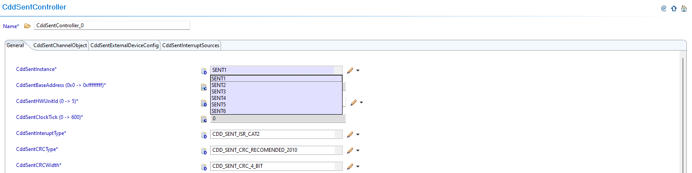
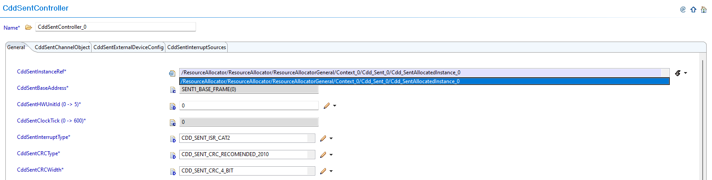
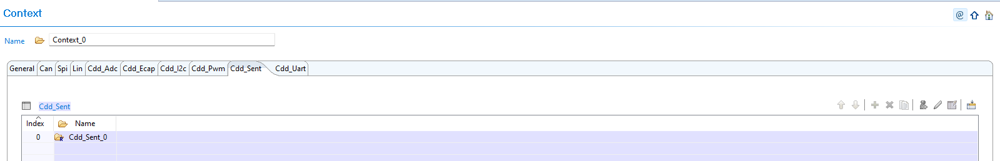
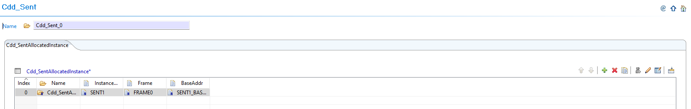
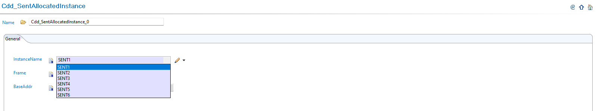

6.13. CDD SENT Module Migration
Migration Approach: Follow sequential migration for clear understanding of changes at each version. Each migration is organized by individual changes with description, old vs new comparison, and migration actions.
6.13.1. v03.00.00 (i.e release v01.04.00) from v02.00.01 (i.e release v01.03.00) Migration
6.13.1.1. Summary
Version v03.00.00 introduces Resource Allocator as a mandatory architectural foundation and updates DEM configuration parameter naming. This represents a fundamental shift from direct parameter configuration to centralized resource management:
Resource Allocator Introduction and Controller Configuration Updates: Resource Allocator becomes mandatory with CDD SENT controller configurations updated to reference Resource Allocator instances
DEM Configuration Parameter Update: DEM event parameter reference name changed for consistency with module naming conventions
PREREQUISITE: Complete Resource Allocator Setup before proceeding.
6.13.1.2. Change 1: Resource Allocator Introduction and Controller Configuration Updates
6.13.1.2.1. Description
Resource Allocator becomes a mandatory architectural foundation for the CDD SENT module, with CDD SENT controller configurations updated to reference Resource Allocator instances. This represents a fundamental shift from direct parameter configuration to centralized resource management, where CDD SENT instances are allocated through Resource Allocator and then referenced by controller configurations.
6.13.1.2.2. Old vs New Configuration
Previous Configuration (v02.00.01): Direct parameter selection was used without Resource Allocator dependency.
{kind=link}

Fig. 6.57 v02.00.01: Direct SENT controller parameter selection
New Configuration (v03.00.00): CDD SENT configurations now reference instances allocated through Resource Allocator.
{kind=link}

Fig. 6.58 v03.00.00: Set CddSentInstanceRef to point to the corresponding Cdd_SentAllocatedInstance in Resource Allocator
6.13.1.2.3. Migration Actions
Setup Resource Allocator: Follow Resource Allocator Setup
Navigate to Context: Navigate to ResourceAllocatorGeneral → Context → Cdd_Sent and add CDD SENT allocator:
{kind=link}

Fig. 6.59 Navigate to Context and add CDD SENT allocator
Add CDD SENT Instance: Add Cdd_SentAllocatedInstance entries for each SENT instance your application requires:
{kind=link}

Fig. 6.60 Add Cdd_SentAllocatedInstance entries for each SENT instance your application requires
Configure SENT Instance: Configure the InstanceName, Frame, and BaseAddr for each allocated instance:
{kind=link}

Fig. 6.61 Configure the InstanceName, Frame, and BaseAddr for each allocated instance
Complete Configuration: Finalize CDD SENT instance allocation
Navigate to CddSentController: Navigate to Cdd → CddSentController and update configurations to reference the CDD SENT instances allocated in Resource Allocator
Open Controller Configuration: Access the CddSentController configuration that needs to be updated
Set Instance Reference: Set CddSentInstanceRef to point to the corresponding Cdd_SentAllocatedInstance in Resource Allocator
Verify Automatic Derivation: Confirm that the CddSentBaseAddress parameter is now automatically derived from the Resource Allocator reference
6.13.1.3. Change 2: DEM Configuration Parameter Update
6.13.1.3.1. Description
Version v03.00.00 updates the DEM event parameter reference name for consistency with module naming conventions. The DEM event parameter is renamed to include the module-specific prefix for better identification and naming consistency.
6.13.1.3.2. Old vs New DEM Parameter Names
DEM Event Parameter Name Mapping:
v02.00.01 |
v03.00.00 |
|---|---|
|
|
Parameter Details:
Purpose: DEM event parameter for hardware error reporting
Change: Added module-specific prefix for better identification
Usage: If DEM error reporting is enabled in your configuration
6.13.1.3.3. Migration Actions
Check DEM Configuration: Determine if DEM error reporting is enabled in your CDD SENT configuration
Update DEM Event Reference: If DEM error reporting is enabled, update the DEM event parameter reference from
CDD_E_HARDWARE_ERRORtoCDD_SENT_E_HARDWARE_ERRORUpdate Application Code: If your application code directly references this DEM event parameter name, update all references to use the new naming convention
Verify DEM Integration: Ensure DEM error reporting functionality works correctly with the updated parameter name
Note
The Resource Allocator module must be configured before the CDD SENT module to ensure correct instance availability. For more details on Resource Allocator configuration, see the Resource Allocator Module User Guide.
6.13.2. v02.00.00 (i.e release v01.03.00) from v01.00.00 (i.e release v01.02.00) Migration
6.13.2.1. Summary
Version v02.00.00 introduces schema compatibility updates to align with updated plugin structure and reference paths:
AR-ELEMENT Name Change: Generated .xdm file AR-ELEMENT name requires updating for schema compatibility
MODULE-CONFIGURATION Path Update: Generated .xdm file MODULE-CONFIGURATION definition path requires updating
Reference Path Updates: Generated .xdm file reference paths require updating due to schema structure changes
Note
The CDD SENT v2.0.0 plugin contains updated schema definitions that are not backward compatible with v1.0.0 generated configurations. To use existing v1.0.0 configurations with the v2.0.0 plugin, the generated .xdm files (created by EB Tresos from your configuration) must be updated.
6.13.2.2. Change 1: AR-ELEMENT Name Change in Generated .xdm File
6.13.2.2.1. Description
When upgrading from v1.0.0 to v2.0.0, the generated .xdm file from EB Tresos contains AR-ELEMENT names that are not compatible with the new plugin schema. The AR-ELEMENT name needs to be updated in the generated .xdm file to ensure compatibility.
6.13.2.2.2. Old vs New AR-ELEMENT Configuration
Generated .xdm File AR-ELEMENT Name:
v01.00.00 Generated .xdm |
v02.00.00 Required .xdm |
|---|---|
|
|
6.13.2.2.3. Migration Actions
Locate Generated .xdm File: Find your project’s generated .xdm file (created by EB Tresos from your configuration)
Open File for Editing: Open the generated .xdm file in a text editor
Find AR-ELEMENT Reference: Locate the line containing
<d:chc name="Cdd_Sent" type="AR-ELEMENT"Update AR-ELEMENT Name: Change the AR-ELEMENT name from
Cdd_SenttoCddSave File: Save the updated .xdm file
6.13.2.3. Change 2: MODULE-CONFIGURATION Path Update in Generated .xdm File
6.13.2.3.1. Description
The MODULE-CONFIGURATION definition path in the generated .xdm file needs to be updated to reflect the new schema structure. The path must include the additional Cdd component for proper module reference.
6.13.2.3.2. Old vs New MODULE-CONFIGURATION Path
Generated .xdm File MODULE-CONFIGURATION Path:
v01.00.00 Generated .xdm |
v02.00.00 Required .xdm |
|---|---|
|
|
6.13.2.3.3. Migration Actions
Continue Editing .xdm File: In the same generated .xdm file being edited
Find MODULE-CONFIGURATION Path: Locate the line containing
<a:a name="DEF" value="ASPath:/TI_F29H85x/Cdd_Sent"/>Update Definition Path: Change the MODULE-CONFIGURATION path from
ASPath:/TI_F29H85x/Cdd_SenttoASPath:/TI_F29H85x/Cdd_Sent/CddVerify Path Structure: Ensure the updated path includes the additional
/CddcomponentSave Changes: Save the updated .xdm file
6.13.2.4. Change 3: Reference Path Updates in Generated .xdm File
6.13.2.4.1. Description
Any REFERENCE type parameters in the generated .xdm file that refer to other CDD SENT parameters by their schema path must be updated due to the schema structure change. All internal reference paths need to be updated to reflect the new schema hierarchy.
6.13.2.4.2. Old vs New Reference Paths
Generated .xdm File Reference Path Example:
For any reference parameters expecting reference to a SENT configuration:
v01.00.00 Generated .xdm Reference Path |
v02.00.00 Required .xdm Reference Path |
|---|---|
|
|
6.13.2.4.3. Migration Actions
Continue Editing .xdm File: In the same generated .xdm file being edited
Search for Reference Paths: Find all REFERENCE type parameters that contain
/Cdd_Sent/Cdd_Sent/in their pathsUpdate Reference Paths: Change all occurrences of
/Cdd_Sent/Cdd_Sent/to/Cdd_Sent/Cdd/Verify All Updates: Ensure all reference paths now use the correct schema hierarchy
Save Final Changes: Save the completely updated .xdm file
Generated .xdm File Structure Comparison:
Before Editing (v01.00.00 Generated .xdm File):
<d:lst type="TOP-LEVEL-PACKAGES">
<d:ctr name="Cdd_Sent" type="AR-PACKAGE">
<d:lst type="ELEMENTS">
<d:chc name="Cdd_Sent" type="AR-ELEMENT" value="MODULE-CONFIGURATION">
<d:ctr type="MODULE-CONFIGURATION">
<a:a name="DEF" value="ASPath:/TI_F29H85x/Cdd_Sent"/>
After Editing (v02.00.00 Compatible .xdm File):
<d:lst type="TOP-LEVEL-PACKAGES">
<d:ctr name="Cdd_Sent" type="AR-PACKAGE">
<d:lst type="ELEMENTS">
<d:chc name="Cdd" type="AR-ELEMENT" value="MODULE-CONFIGURATION">
<d:ctr type="MODULE-CONFIGURATION">
<a:a name="DEF" value="ASPath:/TI_F29H85x/Cdd_Sent/Cdd"/>
Note
Only the generated .xdm files (created by EB Tresos from your configuration) can be modified. The plugin .xdm files themselves cannot and should not be modified.